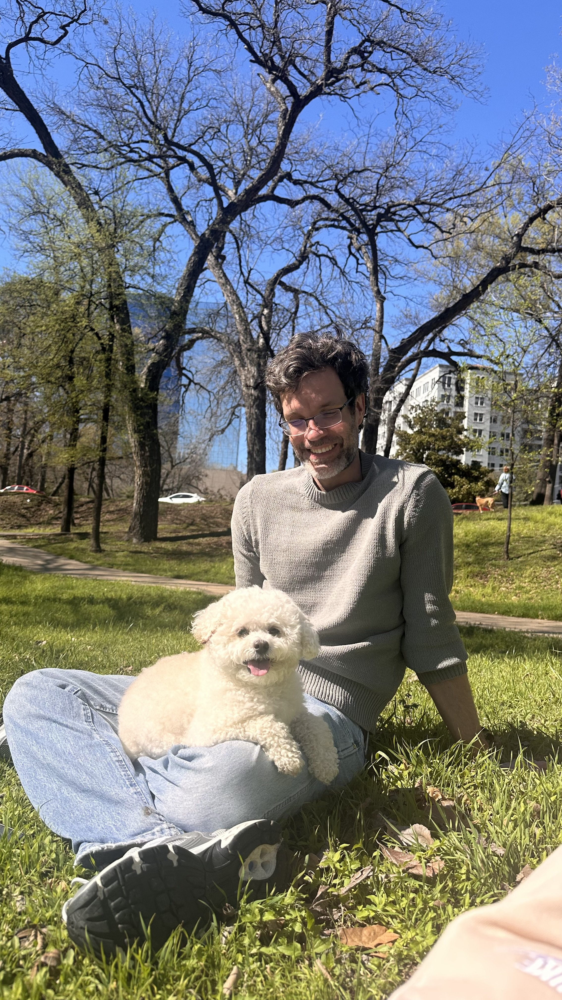

About Jason Kautz

I am an Assistant Professor of Organizational Behavior and Human Resource Management at the Jindal School of Management at the University of Texas at Dallas. My research is at the intersection of interpersonal dynamics, trust, and counterproductive work behaviors. I apply innovative methodologies to uncover the hidden patterns shaping how people work together or fall apart.
I grew up in Buffalo, New York. When I was 18, I joined the Navy and traveled the world on the aircraft carrier the USS Carl Vinson (CVN 70). Since then, I have traveled and made home in several areas.
In my free time, I enjoy cooking, gardening, and reading sci-fi novels. I am also newly discovering my passion for hiking and camping. When traveling, I prioritize trying out local coffee and visiting natural history museums when possible (dinosaurs rock!).